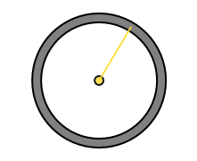
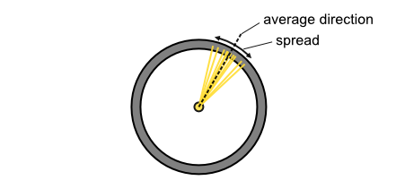
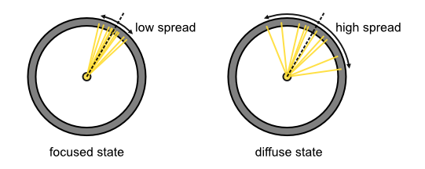
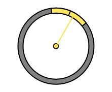
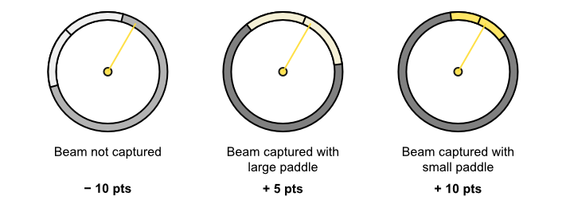
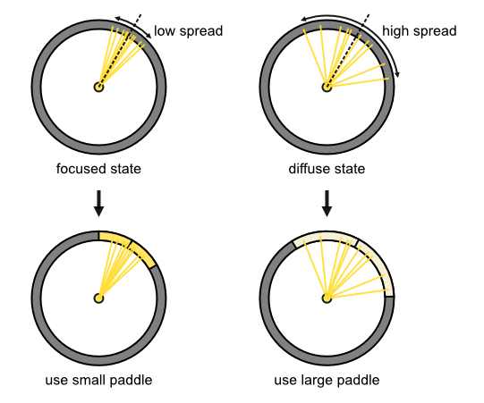
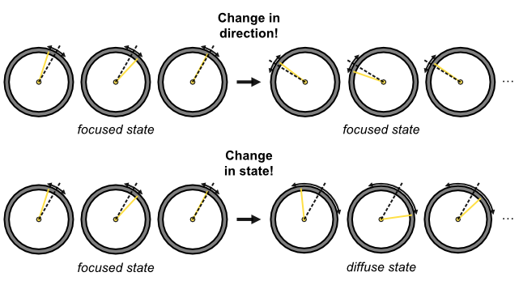

You are a space explorer on a mission to capture mysterious energy beams emitted from a distant star. These energy beams represent valuable resources that will help your space colony thrive.
However, collecting the beams is not an easy task because the star is unpredictable, shooting out beams in various directions. Both the average direction of the beams and their spread can change at any moment.
Your job is to predict where the next beam will appear and capture it using your collection device, called the "paddle".
During the task, you will observe beams emitted by the star one after the other. The beams will be shot from the center of your screen (where the star is located), as shown below. Each time a beam is about to be emitted, you will have to predict its direction in order to capture it.

How the beams behave
Imagine the star is like a flashlight. It has a certain average direction and spread. The energy beams are emitted in a particular direction on average, but they spread out from this average direction (similar to how light spreads out from a flashlight). The star's emission spread determines how much the beams tend to deviate from the average direction.

The emission spread depends on the state the star is currently in. It can be in one of two states: either the focused state, where the emission spread is low and the beams are tightly focused around the average direction, or the diffuse state, where the emission spread is high and the beams are widely scattered.

Determining both the average direction and the current state of the star is critical to your task. You will need to position your paddle accurately (close to the average direction) and choose between a large or small paddle, depending on whether the star is in the diffuse or focused state, to maximize your energy collection.
Here, you see the paddle that you will use to collect energy from the beams. During the task, you will move the paddle along a ring to intercept the beams.

In addition to moving the paddle, you can choose and switch between two paddle sizes: a small paddle or a large paddle.
The large paddle has a higher chance of capturing a beam but has a lower energy yield (+5 energy points per captured beam) compared to the small paddle (+10 points per captured beam). However, you will lose points when the beam is not intercepted (-10 points per uncaptured beam).

All things considered, it is best to use the small paddle when the star is in the focused state and the large paddle when it is in the diffuse state.

To determine the average direction and the state of the star (focused or diffuse), you will need to observe the beams carefully. However, the task is even more challenging because the star is not stable: at any moment, the star can change its average direction or its state.

The star is affected by different forces that can change its average direction or state. Changes in direction and changes in state occur independently because they are caused by different events.
Changes in direction are caused by external events: from time to time, sudden bursts of solar winds cause the star to rotate on its axis, resulting in a new random average direction.
Changes in state are caused by internal events: fluctuations within the star produce varying levels of agitation. When this agitation passes above or below a certain threshold, the star shifts into the diffuse or focused state, respectively.
During the task, your active participation is crucial. You will need to continuously estimate the current average direction and state of the star based on the emitted beams, and adjust your paddle's location and size accordingly.
You will have the opportunity to adjust the paddle after each beam emission. When you’re ready, you'll confirm your choice by clicking with the mouse or pressing the spacebar, and the next beam will appear.
Check your understanding before you begin the task
What happens to the average direction of the beams emitted by the star?
What does it mean if the beams are landing very close to each other?
Why should you choose the small paddle when the star is in the focused state?
How do changes in the star's average direction and state occur?
What is the consequence of missing a beam with your paddle?
We are about to begin the task. The task will consist of 15 blocks. Each block takes about 3 minutes. You will have the option to take a break between two blocks.
Final tips before you begin